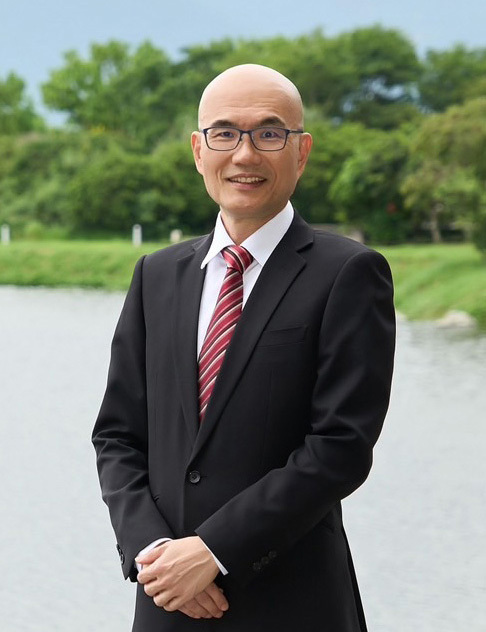
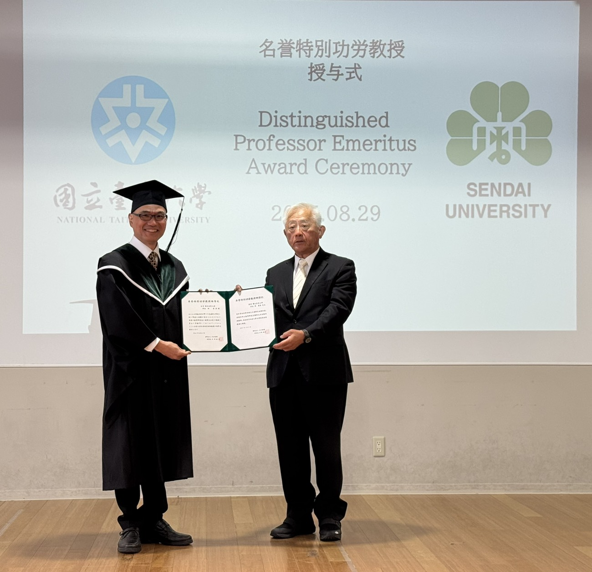

Advisor
Professor

Professor
Professor · Advisor
- Phone +886-6-275-7575 ext. 62529
- Fax 2747076
- Email stevecheng1688@gmail.com
- Lab Ubiquitous Sensing and Cloud Computing Lab
Research Interests
Areas of Expertise
Information & Network Security
Artificial Intelligence
Quantum Computation
Wireless Communication
Mobile Computation
E-life Digital Technology
Computer Network
Machine Learning
Education
Education
- 1995 · Ph.D., Computer Science
University of Maryland, College Park, U.S.A. - 1993 · M.S., Computer Science
University of Maryland, College Park, U.S.A. - 1987 · M.S., Electrical Engineering
National Taiwan University, R.O.C. - 1985 · B.S., Electrical Engineering
National Taiwan University, R.O.C.
Experience
Experience
- President, National Taitung University (2024 ~ now)
- Chair Professor, Chaoyang University of Technology (2021 ~ now)
- Taiwan Nomura Research Institute · Project Consultant, "Home-Based Medical Care Information Platform Project" (2026 ~ now)
- Taiwan Nomura Research Institute · Project Consultant, "Heterogeneous Backup Resilience Assessment and Strategy for Communication Networks" (2026 ~ now)
- Ministry of Digital Development · Review Committee, Digital Innovation Grant Platform (2023 ~ now)
- Mathematics · Special Issue Editor (2022 ~ now)
- Ministry of Science and Technology · Computer Science Convener (2019 ~ 2021)
- National Taipei University of Nursing and Health Science · Selection Committee, College of Health Technology (2021)
- Chinese Institute of Engineers · Board of Education Committee (2021 ~ now)
- National Applied Research Laboratories · Expert Representative, S&T Policy Research Center (2021 ~ now)
- National Applied Research Laboratories · Consultant, AI Industry-University-Research Alliance (2021 ~ now)
- The Chinese Institute of Electrical Engineering · Editor (2017 ~ now)
- International Journal of Electrical and Engineering · Editor (2012 ~ now)
- IEEE Tainan Section · Director (2009 ~ now)
- Tainan Information Software Association · Director (2009 ~ now)
- National Cheng Kung University · Professor, CSIE (2004 ~ now)
- National Science Council · Guest Editor, Science Report (2011)
- National Cheng Kung University · Chair, CSIE (2009 ~ 2012)
- IEEE ComSoc Tainan Sector · Vice Chair (2009 ~ 2012)
- University of Washington · Visiting Scholar, Electrical Engineering (2007 ~ 2008)
- Institute for Information Industry · Planning Committee, Innovation Foresight Technology (2005 ~ 2008)
- National Science Council · Advisory Committee, Open Source Promotion (2004 ~ 2008)
- Institute for Information Industry · Academia-Research Collaboration Committee (2004 ~ 2008)
- National Cheng Kung University · Associate Professor, CSIE (1999 ~ 2004)
- National Cheng Kung University · Assistant Professor, CSIE (1997 ~ 1999)
- National Dong Hwa University · Associate Professor, CSIE (1996 ~ 1997)
Honors & Awards
Honors
- Awarded the title of
Honorary Distinguished Merit Professor

, Sendai University, August 2025 - Listed in Stanford University's World's Top 2% Scientists ranking for "Career-Long Scientific Impact" for seven consecutive years (2019–2025)
- Supervised master's students in "AICUP 2024 Regional Microclimate Data-Based Power Generation Prediction Competition" — Honorable Mention, 2024
- Supervised undergraduate students in the "114th NCKU CSIE Undergraduate Project Exhibition" — Third Place, 2024
- Supervised master's students in the "TSMC Campus Hackathon" — First Place, Factory Knowledge Robot category, 2024
- Excellence in Teaching Award, National Cheng Kung University, 2020
- Excellent Plan Award, Ministry of National Defense & Ministry of Science and Technology, 2018
- Merit Award, Software & Hardware Integration, Embedded Software Contest, Ministry of Education, 2007
- Excellence in Teaching Award, 2005
- Established NCKU Center for Quantum Frontiers of Research & Technology; served as Deputy Director
- Wireless Mobile Dreamer Contest, Intel Gold Award, 2004
- Mobile Creative Bronze Medal Award, 2004
- Merit Award, Embedded Software Contest, Ministry of Education, 2003
- Excellent Work, National "Wireless Mobile Dreamer" Competition, 2002
- K. T. Li Young Researcher Award, 2002
- Technical Adviser, Institute for Information Industry Multimedia Laboratory, 2002
- Gold Award, Mobile Application Development and Creative Contest, 2001
- College Student Merit Award, Communication Technology Project Contest, Ministry of Education, 2000
- Acer Longteng Paper Award, 1999
- Instructor of "85 Years Industry Research Visit in Summer", Industrial Technology Research Institute, 1996
- Ph.D. Thesis Speech, Honeywell Inc., 1995
- Outstanding Research Award, National Science Council (NSC) of Taiwan
- Technical Review Committee, NCKU Center for Corporate Relations and Technology Transfer
- Technical Adviser, "Five-Year Plan of Communication Software Key Technology Development", Institute for Information Industry